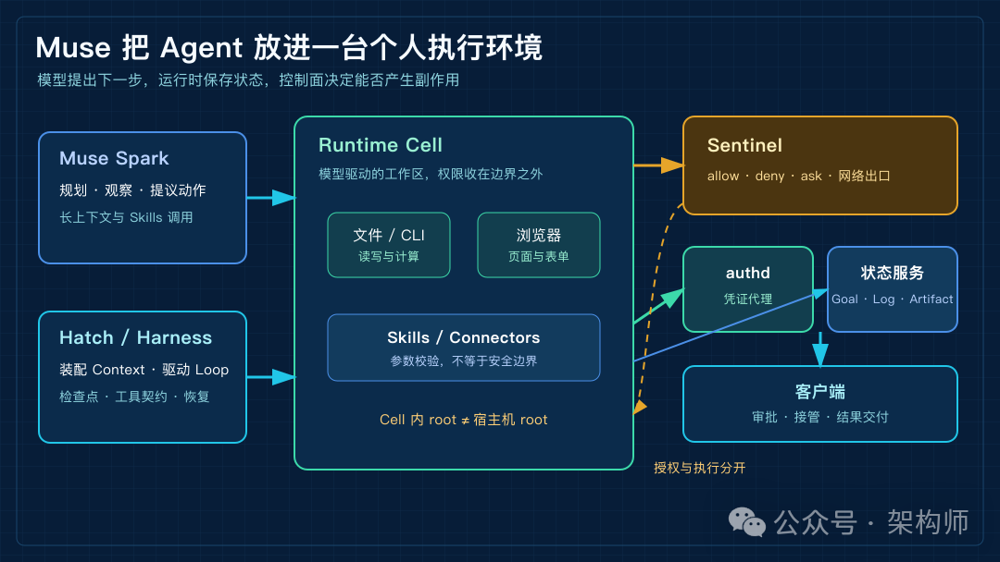
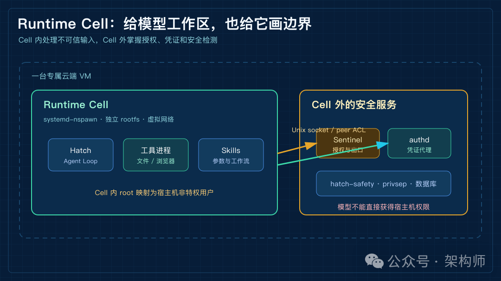
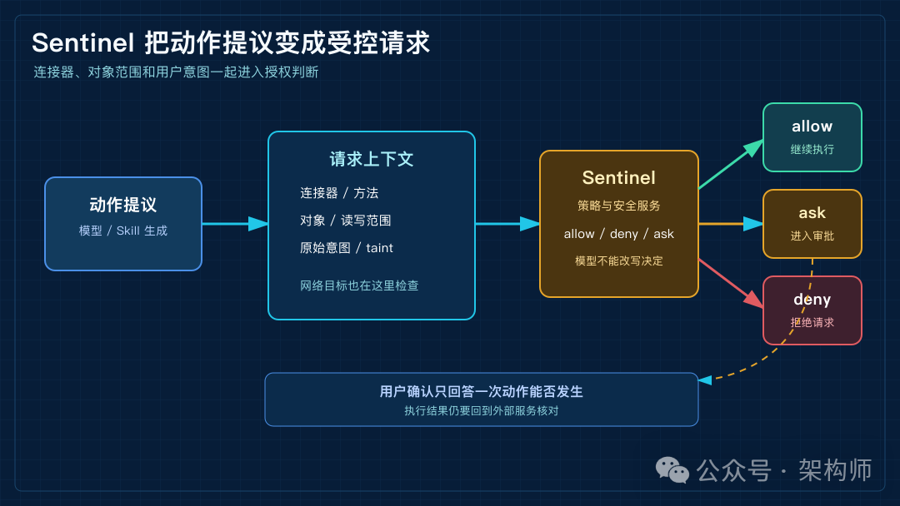
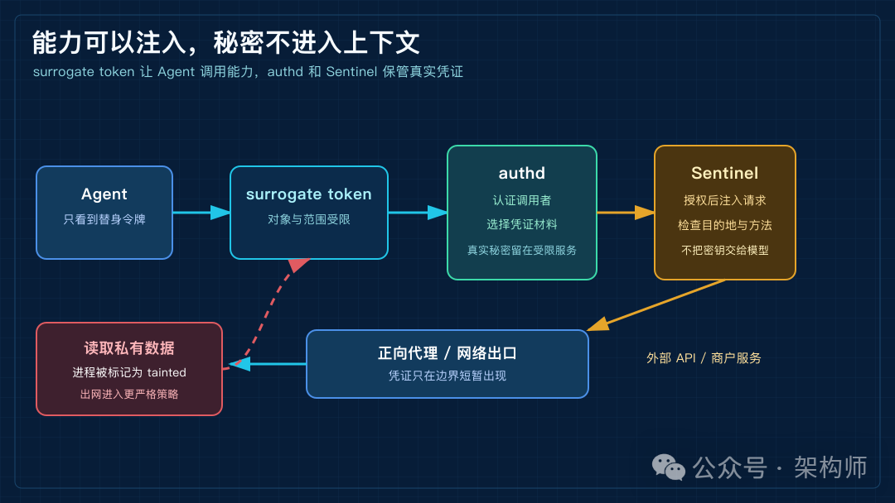
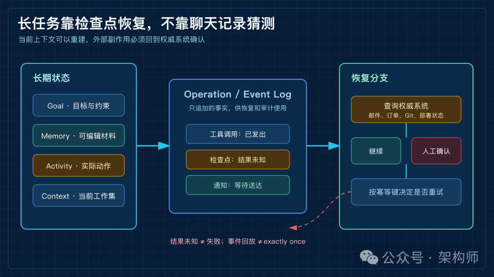

Meta Muse架构深度解析：到底有何不同
来源：微信公众号 归档日期：2026-09-28 抓取状态：成功 原文字符：13233｜配图：6 张
摘要速览
- 以安排一次出差为引，对比各家 Agent 架构路线：Codex 是面向开发的 Harness（工作区/线程/回合/工具执行/审批），OpenClaw 走个人环境可组合工作流（Markdown 长期记忆 + memory_search），Hermes 关注压缩后回看原始内容，DSH 则把 Profile/Bundle/Session/Agent Loop/事件系统装配成可变开发者运行时（预览版）；路线无高下之分。
核心内容
（待补充）
可执行启发
（待补充）
我的想法
（待补充）
原文沉淀
目录
- 先用一次任务看清边界
- Muse 的变化，首先发生在运行位置
- Hatch 与 Runtime Cell：让模型有地方工作，也有碰不到的地方
- Sentinel：模型可以提议，授权由控制面决定
- 凭证代理：Agent 使用能力，却拿不到秘密
- Tainted egress：读取过私有数据，出网就要更谨慎
- 浏览器不是一个普通工具
- Context、Memory 和 Goals：长任务不是把聊天记录存久一点
- Skill 写方法，Connector 才能产生动作
- 长任务最难的地方，是中途停下来以后还能说清楚
- 从四条路线看 Muse 把复杂度放在哪里
- GitHub 仓库能证明什么，不能证明什么
- 我对 Muse 的判断
- 参考资料
- 相关阅读：
架构师（JiaGouX）
我们都是架构师！ 架构未来，你来不来？
让 Agent 帮忙安排一次出差，听起来像一个很普通的任务。它要读邮件、查日历、找航班和酒店，再整理行程。价格合适时，还要回来请求确认。
把这件事交给不同的 Agent，系统的样子会很不一样。
Codex 更像一套面向开发工作的 Harness。它围绕工作区、线程、回合、工具执行和审批组织任务。最近，Codex 也在实验用 notes 和 history 查询延续长任务上下文。
OpenClaw 更偏个人环境里的可组合工作流。长期记忆可以落在 Markdown 文件中，再通过 memory_search 找回来。
Hermes 的公开讨论集中在另一处：上下文压缩以后，怎样回看被压缩的原始内容。DSH 也走另一条路线。它把 Profile、Bundle、Session、Agent Loop 和事件系统装配成一个可变的开发者运行时。
目前，DSH 仍是开发者预览版本。
这些路线没有简单的高下之分。它们把复杂度放在了不同位置。有的优先工作区和开发者控制，有的优先可读的本地状态。
还有的优先长上下文的回查，或者运行时组合能力。
Meta Muse 要解决的任务更接近另一种产品形态。用户关掉 App 以后，Agent 还要继续工作。它要在一台云端个人计算机里浏览网页、读取邮件、等待审批、写入文件，甚至完成一笔购买。
这类任务要同时满足四个条件：下一轮模型能看到正确的上下文；动作有可以限制的执行环境；权限决定独立于模型；任务中断后还能从真实状态继续。
所以，我更愿意把 Muse 看成一套个人执行环境。Muse Spark 是其中的模型。Hatch 驱动 Agent Loop，Runtime Cell 提供工作区和工具。
Sentinel 负责授权与网络出口，客户端承接审批、接管和结果交付。把这几层放在一起，才是 Muse 的架构问题。
下面的判断主要依据 Meta 在 2026 年 9 月公开的 Muse 设计和安全文章。Muse Spark 1.3 资料也纳入了判断。
公开仓库只用于交叉核对命名、文件结构和调用方向，不替代 Meta 的完整实现。
Muse Spark 1.3 决定了 Agent 能不能把任务往前推。Meta 公布的训练方向包括长上下文、CLI 和 Skills 调用，以及长轨迹指令跟随。训练也覆盖对提示词注入的识别。
公开规格还包括百万 token 上下文，以及文本、图像、视频输入。这些能力适合支撑多轮工具调用，却不能替代运行时的状态、权限和恢复机制。
一百万 token 的窗口也不等于一百万 token 的长期记忆。Harness 和控制面还要决定三件事：哪些内容进入当前工作集，哪些结果写入目标或记忆。
它们还要确认哪些动作已经产生外部副作用。

Muse 个人执行环境的总体架构
图 1：Muse 把模型、工作区、连接器、授权和长期状态放进同一套个人执行环境。
先用一次任务看清边界
假设用户说：“帮我安排下周去上海的出差。先看日历和邮件，再找三个合适的航班和酒店，整理成行程。总价低于预算时提醒我确认，付款前必须等我同意。”
这句话进入系统后，不会直接拼成一条越来越长的提示词。运行时要把目标、时间、用户偏好和历史结果装配成这一轮的工作集。已经完成的步骤、可用工具和当前授权也要一起带上。模型根据工作集提出下一步，可能是读取日历，也可能是搜索航班。
模型提出的是意图。Hatch 再把意图交给连接器、浏览器或文件工具；工具返回页面、文件、错误和权限状态；运行时挑出与下一步有关的结果，写入状态并重新装配上下文。整个过程大致是：
用户目标与约束
↓
上下文装配、状态检查
↓
Muse Spark 提出下一步
↓
Hatch / Agent Harness 分派工具
↓
Sentinel 判断连接器与网络动作
↓
Runtime Cell 或浏览器执行
↓
结果、检查点、通知状态持久化
└──────────────→ 下一轮决策这里有三份不能混在一起的事实。模型说“发送邮件”，只代表它提出了动作；Sentinel 返回 allow，说明这次请求获得了授权；邮件服务返回成功，才说明外部副作用可能已经发生。
任务运行几个小时以后，系统还要能回答三个问题：“哪一步已经提交？”“哪一步只是准备好了？”“重试会不会重复发送？”
研发任务里也有一个很像的坑。Agent 刚改完配置文件，检索索引还停留在旧版本。下一轮如果只相信索引，就可能沿着已经不存在的配置继续修改。工作树、测试结果和业务回执属于外部事实，模型上下文只能保存当前推理需要的那一部分。
这条信息流贯穿了 Muse 的官方设计文档、安全文章和公开仓库。
Muse 的变化，首先发生在运行位置
Meta 对 Muse 的描述里有一个很关键的前提：每个用户拥有一台专属的云端 VM。它有文件系统、浏览器、足够运行工具和子 Agent 的计算资源，也能在客户端关闭后继续工作。
对 Coding Agent 来说，工作区通常就是项目目录，运行时间由一次开发任务决定。Muse 面对的是个人生活中的跨应用任务，运行环境必须持续存在。
浏览器、连接器、文件、计划任务和记忆也要在同一个用户边界内协调。把执行环境放到云端，换来了持续运行和统一管理，也把隔离、凭证和隐私的责任推到了平台架构上。
Meta 给这台机器划了两块安全域。处理不可信输入、运行 Hatch 和工具的部分放进 Runtime Cell。凭证、授权、数据库和安全检测等敏感服务留在 Cell 外。
官方材料把目标说得很清楚：一台机器上有两个隔离的安全域。模型拿不到拥有宿主机 root 权限的 shell。
这条边界解决的是“即使 Agent 判断错了，最多能碰到什么”。用户确认解决的是“这一次动作是否可以发生”。
两者经常被混成一个安全开关，实际上承担的是不同的失败后果。
Hatch 与 Runtime Cell：让模型有地方工作，也有碰不到的地方
Hatch 是 Muse 在 Meta 代码库中的内部名称，也是核心 Agent Harness。它负责驱动循环、组织工具和工作区，并与外部安全服务通信。
公开安全文章没有给出完整的 Hatch 源码，但已经把运行边界说得足够具体。
Runtime Cell 使用 systemd-nspawn，拥有独立的 rootfs 和虚拟网络。Cell 内的 root 会映射成宿主机上的非特权用户，系统调用也会经过过滤。
Linux capabilities 会进一步收窄。例如，Cell 不能随意使用 CAP_SYS_PTRACE 或 CAP_NET_ADMIN。容器内的 root 因此不能等同于宿主机 root。
Cell 外还有 hatch-safety、privsep、hatch-authd、Sentinel、数据库以及推理和遥测代理。它们通过 Unix domain socket 等方式通信。
调用方身份由 SO_PEERCRED 和 peer ACL 等机制校验。
这样的分层让模型驱动的工作区和高权限服务使用不同的进程、文件和通信边界。
这和把所有工具都注册到一个进程里差别很大。工具 schema 只能校验参数形状。它决定不了一段代码能否读取宿主机文件、访问内网，或把结果发到任意地址。真正的安全边界要落在进程、文件、网络和凭证这些系统对象上。

Muse 的 Runtime Cell 与安全服务边界
图 2：Runtime Cell 承担模型驱动的工作，凭证、授权和安全检测留在 Cell 外。
Sentinel：模型可以提议，授权由控制面决定
Sentinel 是 Muse 的独立安全控制面。Meta 的表述很直接：Muse 可以提出动作，只有 Sentinel 能授予执行权限。
连接器请求到达 Sentinel 时，系统会检查连接器名称、方法、动作类别和对象范围。它还会结合用户的原始意图，返回 allow、deny 或 ask。
需要确认时，审批请求直接进入客户端的确定性 UI，用户的选择再回到 Sentinel。模型无法在对话里说一句“用户已经同意”，就替代这条审批路径。
网络出口也归 Sentinel 管。Runtime Cell 的流量经由正向代理和 Linux 网络控制到达 Sentinel。
Sentinel 可以检查 hostname、DNS 解析后的最终 IP、端口和协议。它还会检查 HTTP 方法、路径和解码后的请求。
一个看似正常的公网域名，如果解析结果落到内部地址，也会触发 SSRF 防护。
这套做法把“模型想做什么”和“系统允许影响什么”分开了。模型仍然要负责规划，Harness 仍然要负责执行。授权决定则放在一个模型无法改写的控制面里。

Sentinel 的 allow、deny、ask 审批路径
图 3：连接器请求先经过 Sentinel，需确认的动作才进入客户端的确定性审批界面。
凭证代理：Agent 使用能力，却拿不到秘密
个人 Agent 一旦开始处理邮件、日历和购物，就会碰到 OAuth token、登录态和支付凭证。 把真实密钥放进模型上下文或普通工具环境，提示词注入就可能变成直接的凭证泄露。
Muse 的处理方式是让 Agent 只接触 surrogate token。真实凭证由 hatch-authd 等服务保存。Sentinel 放行以后，系统在网络边界即时取得凭证并注入请求。
模型即使被诱导执行“把密钥打印出来”，手上也没有可打印的真实密钥。
这条链路里有三种职责。privsep 约束凭证相关代码运行在哪个受限进程。authd 决定经过认证的调用者能拿到哪类凭证材料。Sentinel 决定当前动作是否获得授权。它们彼此配合，却没有一个组件同时掌握全部权限。
浏览器里的人工输入也遵循相同思路。用户在客户端或安全 UI 中输入密码，凭证直接进入受保护的存储；浏览器自动化只在需要的时刻获得一次受限的注入能力，主 Agent 看不到原文。

Muse 的 surrogate token 与凭证注入链路
图 4：Agent 只拿到 surrogate token，真实凭证在授权后的网络边界被注入请求。
Tainted egress：读取过私有数据，出网就要更谨慎
Simon Willison 把 Agent 的高风险条件概括为“致命三要素”。它们是读取私有数据、接触不可信内容，以及向外通信。
邮件里的一段恶意文字、网页中的隐藏指令或下载文件，都可能试图把三件事串起来。
Muse 的防护并不只依赖模型拒绝恶意指令。进入上下文的外部内容会被标记，hatch-safety 和独立分类器会做检测；浏览器和连接器的能力被限制；真正的网络出口由 Sentinel 再检查。
其中一个很有工程味的设计是 tainted egress。工具进程一旦读取用户数据，就会被内核级数据流跟踪标记为 tainted。
没有读取敏感数据、符合狭窄规则的干净请求，可以自动通过。带有 taint 或无法确认来源的进程，则转入更严格的策略或人工审批。
这不是一条能消灭提示词注入的魔法规则。它的价值在于缩短攻击链。攻击者需要同时控制上下文、工具和出口，系统再根据进程实际读过什么决定是否放行。
Meta 也明确承认提示词注入仍是开放问题。架构能够降低错误发生率和影响范围，却不能保证 Agent 永远不犯错。
浏览器不是一个普通工具
浏览器把外部不可信内容直接带进了 Agent 的视野。网页里的正文、图片、弹窗、广告、下载文件和表单字段，可能同时包含业务信息和恶意指令。
Muse 使用隔离的 Chromium 和独立 broker。浏览器子 Agent 主要读取 accessibility tree。它不会任意执行页面脚本，也不会直接使用原始 DOM。
它不能执行页面 JavaScript，也不能直接使用 Chrome DevTools。用户接管浏览器，或者安全凭证正在填入表单时，Agent 会暂停。
购买流程又多了一层限制。系统为特定商户、金额和时间生成一次性支付凭证，每次结账都需要用户确认。这样做会牺牲一点自动化的顺滑度，却把最难撤销的副作用留在了确定性的审批界面里。
从架构角度看，浏览器能力至少被拆成页面读取、动作调用、凭证输入和用户接管几部分。Agent 得到的是完成任务所需的窄接口，浏览器进程和凭证存储不再把同等权限全部暴露给它。
Context、Memory 和 Goals：长任务不是把聊天记录存久一点
Muse 的产品说明里有 Goals、Memory、Activity Log、后台任务和 Artifacts。
这些功能共同补上了 Agent 的时间维度。
一次聊天只需要回答当前问题。一个持续几天的目标则要知道为什么存在，已经完成了什么，下一步是什么，什么时候该唤醒用户。后台任务完成后，系统还要判断结果是写入状态、继续推进，还是发一条通知。
我会把这几类状态分开看：
- Goal
保存要达成的目标、约束和阶段；
- Memory
保存以后可能有用的偏好和材料，用户可以查看、编辑、删除和下载；
- Activity Log
记录系统实际做过什么，给用户和运维人员提供可追踪的过程；
- Artifact
保存行程、清单、文件等结构化结果；
- Context
只是下一轮模型需要看到的工作集。
持久保存、能够检索、已经进入本轮上下文，是三个不同的状态。把所有内容都塞进上下文，会让成本、延迟和提示词注入面一起增长；只保留摘要，又可能丢掉下一步真正需要的原始证据。
Codex、OpenClaw 和 Hermes 的公开讨论，正好提供了几组对照。Codex 正在实验 notes 与 history 查询。这个方向说明，开发者工具开始把当前工作集和历史记录分开。
OpenClaw 用 Markdown 保存可读的长期材料，再用关键词和向量索引帮助检索。Hermes 的公开讨论提到回看被压缩内容，处理的是摘要遗漏以后如何找回原文。它们都在回答上下文生命周期问题，只是运行环境、状态所有权和产品目标不同。
Muse 再往前走了一步。上下文恢复不能只服务一次开发会话，还要服务一个在 App 关闭以后继续运行的个人目标。
Skill 写方法，Connector 才能产生动作
从 MuseAI-Skills 和 muse-skills 的公开快照看，Skill 通常包含使用说明、输入输出约定和边界条件。快照还包含连接器调用方式。
它告诉模型怎样完成一个领域任务，类似一份可检索的操作手册。
Skill 自己不等于权限。它可以描述怎样查日历、整理邮件或生成购物清单。真正的调用仍需经过运行时、连接器 worker 和授权策略。
连接器至少有两层边界。参数边界决定调用哪个方法、作用于哪个对象、读还是写；执行边界决定代码在哪个进程运行、能拿到哪种凭证、可以访问哪些网络目的地。
Meta 的设计把内置连接器逻辑放进 Runtime Cell 外的受限 worker。Cell 内的 CLI 负责解析参数，打开调用方已经有权限访问的文件。之后，它通过 Unix socket 传递类型化参数和文件描述符。
这样，模型可以请求“读取日历”，却不必直接获得日历服务的长期密钥。
工程上更稳的做法是把工具调用 schema 当成参数校验，而不是安全边界。真正的边界要落实到调用者身份、对象范围、进程权限、网络出口和可回滚的副作用上。
比如，一个“发布服务”的 Skill 可以写清楚构建、部署和回滚步骤。它不能凭一句“发布完成”结束任务。Harness 还要拿到部署回执、健康检查和版本查询。
如果请求已经发出但回执丢失，恢复路径应先查线上状态，再决定是否重试。Skill 固定的是做法，完成证据仍由运行时和外部系统提供。
长任务最难的地方，是中途停下来以后还能说清楚
Muse 可以在后台运行，真正难的问题便从“能不能启动”变成“停下来以后怎样继续”。任务可能读完邮件后被取消，也可能在提交表单前等待审批；浏览器已经打开，连接器已经写入一半，通知还没有送达时，系统需要知道每一步的真实状态。
单纯保存最后一条聊天消息回答不了这些问题。更稳的状态模型至少要区分：
- Session
用户和 Agent 的交互历史；
- Operation
一次后台运行如何开始、推进、重试和结束；
- Checkpoint
哪些动作已经提交，哪些可以安全重放；
- Delivery
结果是否回到主任务，通知是否送达；
- Context
下一轮模型实际看到的工作集。
DSH 的开发者预览提供了一个很有参考价值的对照。它把 Session 做成只追加的事件事实层。Agent Loop、工具和权限通过 Profile、Bundle 及事件钩子装配。
DSH 会在模型请求前、顶层工具副作用前和下一步开始前设置检查点。冷恢复时，如果工具结果缺失，它会记录未知结果，不替系统猜一个成功或失败。

Muse 长任务的状态与恢复路径
图 5：当前上下文可以重建，外部副作用需要回到权威系统确认。
这个设计说明了事件日志和运行状态的价值，也提醒我们一件事：事件可回放，不等于外部副作用天然 exactly once。
发邮件、下订单、改日历仍然需要幂等键、回执查询和业务侧对账。
如果让代码 Agent 跑一夜，进程可能恰好死在“请求已经发出、结果还没落盘”的窗口。系统不能把空白当成失败，也不能把重试当成成功。
Muse 的公开文档没有给出所有连接器在取消、重试和跨客户端恢复时的实现细节。这部分仍需要真实运行数据验证。
从四条路线看 Muse 把复杂度放在哪里
把开头的四个参照物再放回同一条任务链，差异就更清楚了。
Codex 把复杂度放在开发者可控制的工作区和 Harness 上。它的线程、回合、工具、审批、沙箱和上下文切窗，服务的是工程任务的可审查执行。notes 和 history 的实验让长任务更容易延续，但它仍以开发工作流为主要边界。
OpenClaw 把一部分复杂度留给用户和本地环境。Markdown 记忆可读、可编辑、可迁移，配合 memory_search 便能在简单文件和检索索引之间取得平衡。
它适合个人工作流，也意味着用户需要自己管理进程、凭证、网络和长期任务的运行边界。
Hermes 的公开讨论更集中在压缩后的回查能力。它提醒我们，摘要不是历史本身，Agent 需要在必要时重新找到被压缩的内容。
关于 Hermes 的完整产品架构，公开资料还不够。我只把这部分作为上下文工程的旁证，不把一次社交媒体讨论扩展成完整系统结论。
DSH 把复杂度放在运行时的可组合性上。Profile、Bundle、插件和事件流，为开发者提供了替换 Agent Loop、工具和服务的正式位置。
动态装配、版本切换和持久化状态也带来更高的验证成本。它适合研究 Harness 如何演进，当前仍不应被当作成熟的消费级个人 Agent。
Muse 的取舍是把复杂度收进平台。Meta 托管专属 VM，提供浏览器、连接器、后台任务、凭证代理和确定性审批。用户能感知到的入口因此很轻。
代价是用户需要信任平台的隔离和控制面，也需要接受一部分实现不可见。对个人 Agent 来说，这种取舍让“关掉 App 后事情还能继续”成为产品能力。它也让安全边界必须比开发者工具更细。
GitHub 仓库能证明什么，不能证明什么
公开的 13 个仓库提供了很好的旁证链。它们不是 Meta 的完整后端源码，也不能直接代表线上稳定 API。
muse-cli 记录了 Gateway、Personal VM、Noise/WebSocket 和 Protobuf 的逆向线索。这些线索有助于理解客户端与个人 VM 之间可能存在的通信层。
agent-session-kit 观察到客户端里的 hatch-*.json 会话缓存。
sovereign-projects 和 lumenbox 则从 Runtime Cell、egress、权限和安全边界做了独立分析。
MuseAI-Skills 和 muse-skills 保留了 Skills、manifest、连接器、Memory 和 Browser。 仓库还保留了部分 Runtime 快照。
vibe-bar、openox、duo-updater 等仓库则从配额、Web 接口、客户端更新和分发方式提供旁证。
not-a-mused、native-agent、Homebrew Cask 和 codepick 分别补充了本地 endpoint、客户端适配和官方分发信息。 codepick 还提供了二手架构分析。
这些材料适合用来交叉核对命名、文件结构和调用方向。涉及 Meta 内部服务的职责、线上版本和安全策略，仍应以官方设计文档与安全文章为准。
把逆向仓库里的一个字段当成正式 API，或者把静态分析推导成线上必然行为，都会越过证据边界。
我对 Muse 的判断
公开材料已经足够说明 Muse 的架构方向。它把 Agent 从一次请求里的模型调用，推进成一台带状态、工具、浏览器、权限和恢复机制的个人执行环境。
我更关注这套设计同时守住的几条边界：
- 模型输出、授权决定和动作结果分开记录；
- 工作区和安全服务分开运行；
- Agent 可以使用能力，却拿不到长期凭证；
- 读取过私有数据的进程，出网时接受更严格的检查；
- 浏览器内容、页面动作、凭证输入和用户接管各有接口；
- 持久目标、活动日志、检查点和当前上下文各自承担不同职责。
这几条边界把更多模型能力变成了可控制的系统行为，也把错误影响限制在更小的范围内。
还没有被公开资料完全回答的问题同样重要。任务取消后的外部副作用如何对账？连接器重试能否做到业务幂等？跨设备恢复时谁拥有最终状态？通知送达和结果消费怎样关联？Confidential VM 的密钥和审计边界何时能被外部验证？
我会把 Muse 的成熟度判断放在这些问题上。
个人 Agent 真正进入日常使用后，最难的往往不是完成第一步。做到一半时，系统还能不能准确说清楚自己做了什么、为什么这样做、下一步会影响谁。
参考资料
- Meta：How We Designed Muse（https://introducing.muse.ai/）
- Meta：How We Built Safety Into Muse（https://research.meta.ai/blog/security-and-safety-for-ai-agents-our-approach-with-muse）
- Meta：Muse Spark 1.3（https://ai.meta.com/blog/muse-spark-1-3/）
- Andrej Karpathy：Context engineering（https://x.com/karpathy/status/1937902205765607626）
- Simon Willison：Context engineering（https://simonwillison.net/2025/Jun/27/context-engineering/）
- Simon Willison：The lethal trifecta for AI agents（https://simonwillison.net/2025/Jun/16/the-lethal-trifecta/）
- OpenAI Engineering：Unrolling the Codex agent loop（https://openai.com/index/unrolling-the-codex-agent-loop/）
- OpenAI Engineering：Unlocking the Codex harness（https://openai.com/index/unlocking-the-codex-harness/）
- OpenClaw：Memory overview（https://docs.openclaw.ai/concepts/memory）
- Teknium：Hermes compaction recall 讨论（https://x.com/Teknium/status/2094022539534389506）
- DeepSeek Harness 官方仓库（https://github.com/deepseek-ai/deepseek-harness）
- Cordis 官方仓库（https://github.com/cordiverse/cordis）
- win4r/MuseAI-Skills（https://github.com/win4r/MuseAI-Skills）
- nikships/muse-cli（https://github.com/nikships/muse-cli）
- toxicwind/sovereign-projects（https://github.com/toxicwind/sovereign-projects）
- fakechris/lumenbox（https://github.com/fakechris/lumenbox）
- oldwinter/muse-skills（https://github.com/oldwinter/muse-skills）
- AstroQore/agent-session-kit（https://github.com/AstroQore/agent-session-kit）
- AstroQore/vibe-bar（https://github.com/AstroQore/vibe-bar）
- ziyzhu/openox（https://github.com/ziyzhu/openox）
- jizhi0v0/duo-updater（https://github.com/jizhi0v0/duo-updater）
- pwardle/not-a-mused（https://github.com/pwardle/not-a-mused）
- embwl0x/native-agent（https://github.com/embwl0x/native-agent）
- Homebrew/homebrew-cask（https://github.com/Homebrew/homebrew-cask）
- WhiteWorld/codepick（https://github.com/WhiteWorld/codepick）
如喜欢本文，请点击右上角，把文章分享到朋友圈
如有想了解学习的技术点，请留言给若飞安排分享
因公众号更改推送规则，请点“在看”并加“星标”第一时间获取精彩技术分享
·END·
相关阅读：
- Loop Engineering，应该赞成还是反对？
- Claude 做方案，Codex 写代码：多模型协作怎么交接才稳
- 架构排熵：Loop Engineering 的持续清理系统
- CLAUDE.md 拆解：Agent 进仓库前的上下文入口
- Harness工程还没唱罢，Environment工程已然登场
- 设计 Self-Harness 架构：会自我改进的Harness
版权申明：内容来源网络，仅供学习研究，版权归原创者所有。如有侵权烦请告知，我们会立即删除并表示歉意。谢谢!
架构师
我们都是架构师！

关注架构师(JiaGouX)，添加“星标”
获取每天技术干货，一起成为牛逼架构师
技术群请加若飞：1321113940 进架构师群
投稿、合作、版权等邮箱：admin@137x.com
归属：[[02-输入/按主题/AI与效率/_index|AI与效率]]